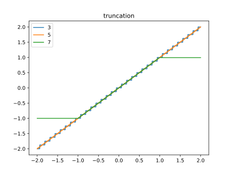
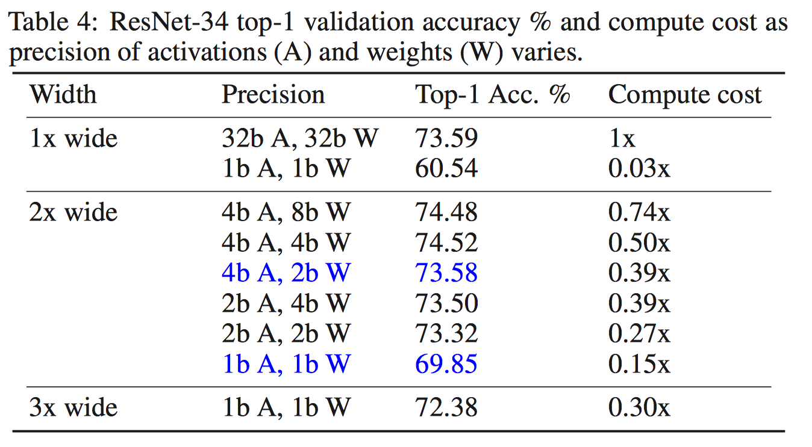
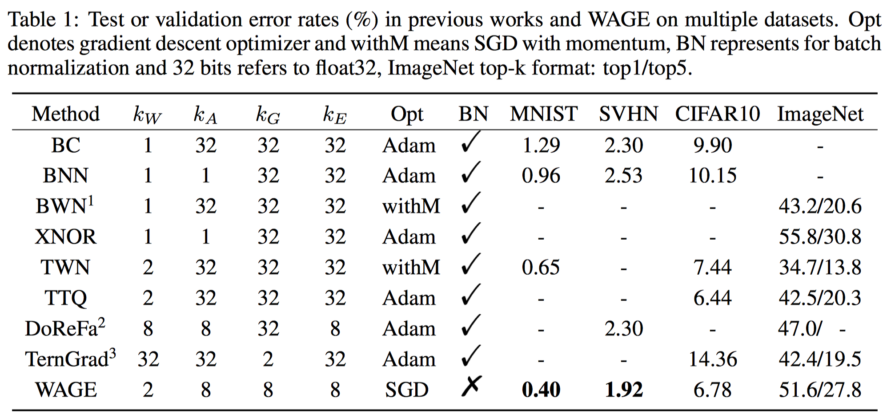
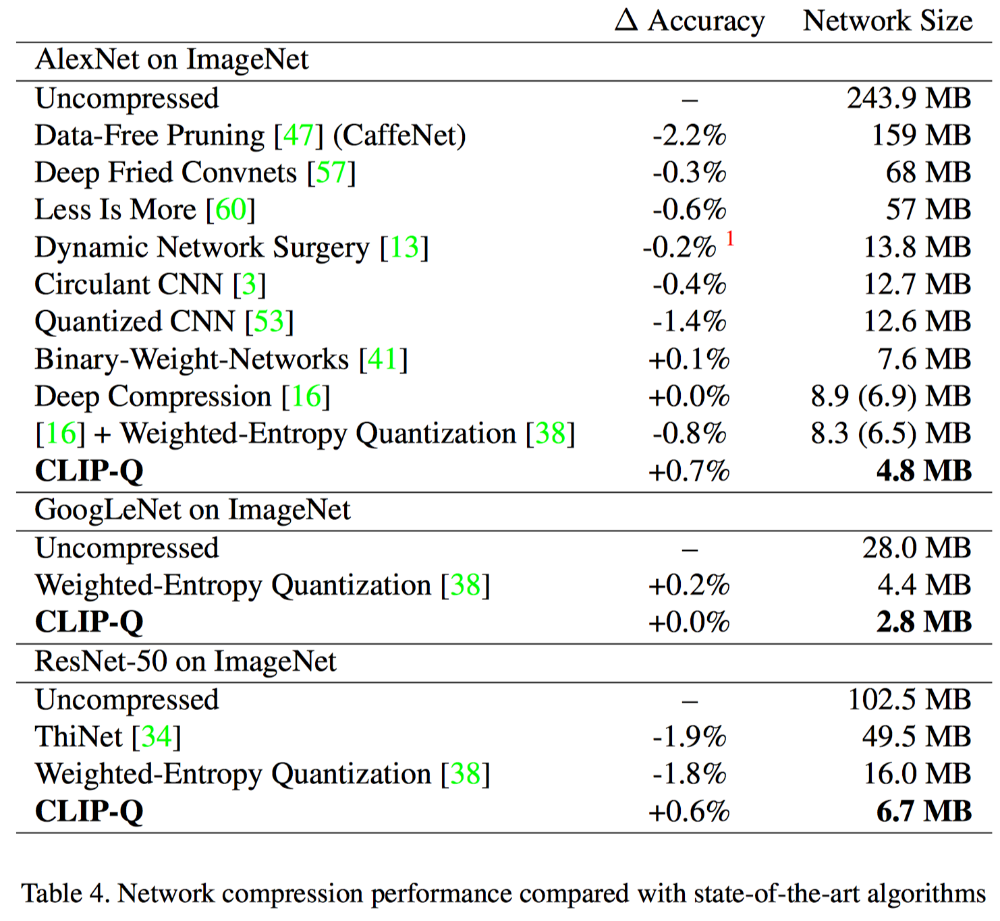
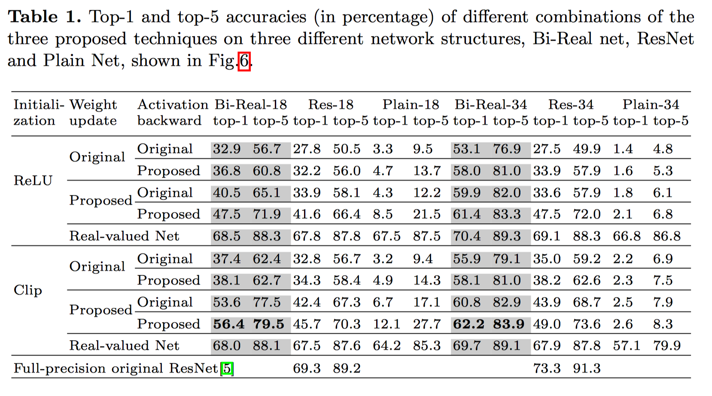
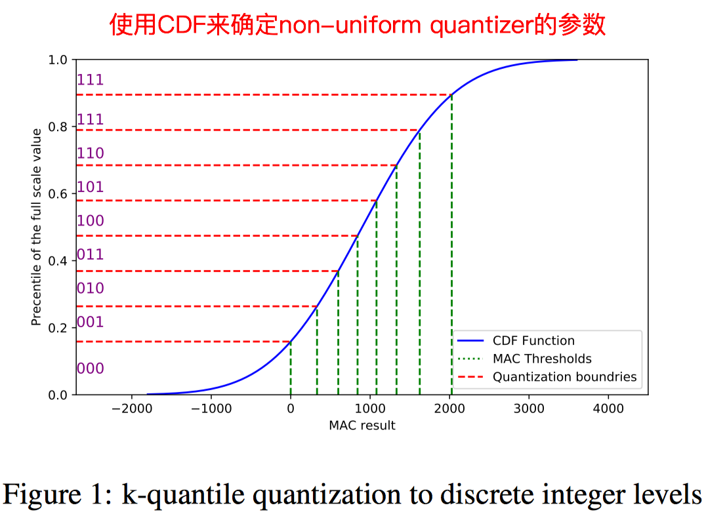
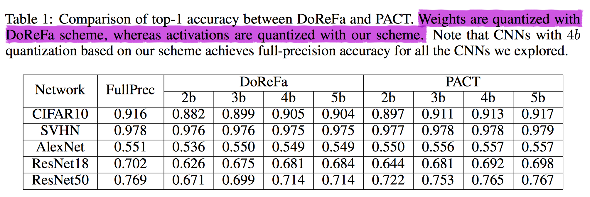

Quantization Algorithms
Truncation without re-training
原理与分析
将fp32的数，直接截断为8bit定点数
以8bits为例，每层的权重共享一个QCode，每层的activation共享一个QCode。
$$
x_q = \frac{clip(round(x_f\times 2^{qcode}), -2^7, 2^7-1)}{2^{qcode}}
$$

如何配置QCode
accuracy-aware config
对于分类网络来说，我们只关心它最后的分类精度，比如baseline网络在ImageNet上分类精度为70%，通过改变配置config，能够得到最后量化后的网络的分类精度。配置Qcode的指标只关心最后的分类精度。Greedy layer-wise optimization
另外，可以采用更加方便的方式，通过最小化$x_q$与$x$之间的KL散度或者MSE，来配置每层的QCode.
特点分析
- 运算简单，不需要重新进行训练
- 需要逐层配置QCode参数，耗费较多资源
- QCode的量化编码方式过于简单，且Qcode只能取值为整数，对分类网络比较友好，但是对检测网络和其他类型的网络并不一定能轻松适配。
试验与结论
使用这种方式进行离线量化，最后的分类网络的精度基本不会下降（千分位的变动）.
DoReFa Net
For weights:
$$
w^k = 2 quantize_k(\frac{\tanh(w_i)}{2 \max(|\tanh(w_i)|)} + \frac{1}{2}) - 1
$$
uniform quantization :( 为什么不直接使用clip函数，明明最后用的是[-1, 1]之间的数值，$tanh$的作用感觉也没有那么大；在某些已经训练好的网络中，weight的分布可能是非常集中在0附近的，如果仍然使用这个映射方式，就导致该层的weight分布强行被拉到[-1, 1]之间，那该层的功能性是不是就改变了？这是不是 DoReFa类型的量化对 first and last layer 敏感的原因呢？
For activations:
$$
a^k = quantize_k(clip(r, 0, 1))
$$
uniform quantization :(
Towards Effective Low-bitwidth Convolutional Neural Networks
The quantization equation:
$$
z_q = Q(z_r) = \frac{1}{2^k - 1}round((2^k - 1)z_r)
$$
where $z_r \in [0, 1]$ denotes the full-precision value and $z_q \in [0, 1]$denotes the quantized value.
For weights:
$$
w_q = Q(\frac{\tanh(w)}{2\max(|\tanh(w)|)} + \frac{1}{2})
$$
应该是paper中写错了，最后应该和DoFeFa的量化方式一样
For activation:
$$
x_q = Q(clip(x, 0, 1))
$$
Paper 主要做了一下几组实验：
TS Two step: quantize weight => quantize activation
PQ Progressive quantization: quantization from higher precisions to lower precisions
Guided Teacher student training.
WRPN
受到了Wide ResNet的启发，Wide ResNet减少网络的深度，扩展网络的宽度，通过重新设计了网络结构的方式来使得网络保持原有的精度。WRPN wide reduced-precision networks需要对weights和activation进行量化，相当于减少了网络的拟合能力，可以通过增加网络宽度的方式来增加一部分参数来弥补量化带来的损失。
半成品的实现：Code
原理分析
- 对w进行[-1, 1]截断，对a进行[0, 1]截断，截断使用clip_by_value函数；
- 对w进行有符号量化，对a进行无符号量化
$$
w_q = \frac{1}{2^{k-1}-1}round((2^{k-1}-1)\cdot w_f) \\
a_q = \frac{1}{2^{k}-1}round((2^{k}-1)\cdot a_f)
$$
特点分析
- quantier的parameter是静态的，不需要像TTQ一样需要在训练中进行学习
In our work, we maintain the depth parameter same as baseline network but widen the filter maps.To be consistent with results reported in prior works, we do not quantize weights and activations of the first and last layer.- 最后是在Intel Arria 10 进行了FPGA的实现，Exploration of Low Numeric Precision Deep Learning Inference Using Intel ® FPGAs论文中又有了更加详细的实现细节。
试验与结论

VNQ: Variational Network Quantization
Our method is an extension of Sparse VD 公式很多，还需要时间推导。
原理分析
特点分析
The method does not require fine-tuning after quantization.
可以从scratch开始训练，也可以直接使用预训练好的权重。Results are shown for ternary quantization on LeNet-5 (MNIST) and DenseNet (CIFAR-10).
只有小数据集小网络，小数据集大网络，没有大数据集和大网络，可能不具有普适性。
WAGE: Training and Inference with Integers in Deep Neural Networks
官方源码：code,只包含cifar10的demo。
将Weight,Activation,Gradient,Error都进行量化，量化方式采用
$$
\sigma(k) = 2^{k-1}, k\in \mathbb{N_+} \\
Q(x, k) = clip(\sigma(k)\cdot round(\frac{x}{\sigma(k)}), -1+\sigma(k), 1-\sigma(k))
$$
试验与结论

如果需要在AI芯片进行训练，WAGE是一个很好的研究方向；但是当前主流的做法是训练交给GPU，只需要在AI芯片上进行inference.
Clip-Q: Deep network compression learning by In-Parallel Pruning Quantization
We combine network pruning and weight quantization in a single learning framework- 使用贝叶斯优化器来
the pruning rate p and the bit budget b - 只对weights进行了pruning和quantization. pruning是百分比的方式，quantization是聚类codebook的方式
试验与结论

量化相关试验我认为还是比较相同bitwidth下的精度更切合实际应用，毕竟量化的作用一方面是压缩权重，更重要的还是AI芯片的inference加速，需要给出hardware friendly的分析与验证。
Bi-Real Net
- 较XOR-Net, BNN网络的分类accuracy有较大的提升
- 没有量化第一层和最后一层，并不
Real:)
试验与结论

Efficient Non-uniform quantizer for quantized neural network targeting Re-configurable hardware

ELQ: Explicit Loss-Error-Aware Quantization for Low-Bit Deep Neural Networks
- 之前的方式大多是layer-wise 最小化量化前后数值的 Error，本文建立了quantization与loss之间的关系。
其实在pruning中也有类似的改进，一般大家的认为weights越小越不重要，优先prune掉，后来提出fisher pruning就是根据loss来确定pruning的策略。前者简单直接，后者理论上能找到更优的解，但实现麻烦。 - 只量化了weights
PACT: parameterized clipping activation for quantized neural networks
- PACT提出Activation的量化方法，并使用DoReFa量化weight，最终训练w4a4 网络在ImageNet上仍能达到很好的accuracy，编码方式也十分简单，很值得借鉴。
- 仍然没有量化第一层和最后一层
原理分析
- Forward quantization
$$
y = PACT(x) = 0.5(|x|-|x-\alpha|+\alpha) \\
y = round(y\cdot \frac{2^k-1}{\alpha})\cdot \frac{\alpha}{2^k-1}
$$
这里也看出k对应的是unsigned int的位数。
在ResNet的bottle net中，含有没有ReLU的feature map, 在一些比较常用的物体检测网络比如YOLO中，采用了leacky ReLU, 在PACT中，并没有对其进行特殊的考虑(它只考虑了无符号的情况)。 - Backward, STE:
$$
\cfrac{\partial y_q}{\partial\alpha} = \cfrac{\partial y_q}{\partial y}\cfrac{\partial y}{\partial\alpha}\simeq \cfrac{\partial y}{\partial \alpha}
$$
试验与结论

weights使用DoReFa方式量化，activations使用PACT方式量化，可以看到在ResNet18上w4a4只和baseline低了一个点。
HWGQ: Deep Learning with Low Precision by Half-wave Gaussian Quantization. CVPR2017
主要是w1a2
FQN: Fully Quantized Network for Object Detection. CVPR2019
主要在物体检测网络上进行了w4a4的量化实验，效果比较好
$$
X^Q = Q_k(X^R)\in\{q_0, q_1, q_2, \dots, q_{2^k-1}\} \\
X^Q = \Delta(X^I - z) \\
lb = q_0, ub = q_{2^k-1} \\
\Delta = \frac{ub - lb}{2^k-1}
$$
For weight:
$$
lb = \min(W) \\
ub = \max(W)
$$
For activation:
$$
lb^l_{EMA} = EMA(\min(A), \gamma=0.999) \\
ub^l_{EMA} = EMA(\max(A), \gamma=0.999)
$$
为了减少activation的波动性，作者将bn freeze住，并在后续的实验部分验证了做法的有效性。
具体做法为，将bn的参数修正到与之对应的conv和fc的weight和bias中，量化时是对修正后的$weight_{merged}$进行量化，训练时更新weight，而不是更新$weight_{merged}$
如何integer only计算卷积
$$
y = Q_k(A^R)\times Q_k(W^R) \\
= \Delta_a(A^I - z_a) \times \Delta_w(W^I - z_w) \\
= \Delta_a \Delta_w (A^I W^I - A^I z_w - W^I z_a + z_a z_w)
$$